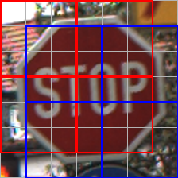
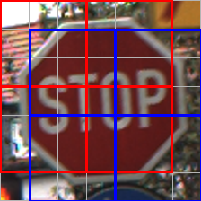

An Analysis of "Swin Transformer: Hierarchical Vision Transformer using Shifted Windows"
This project investigates whether the Swin Transformer can outperform traditional CNNs like ResNet-50 in real-world image classification tasks. Using the GTSRB traffic sign dataset, we evaluate both models under the same training conditions to ensure a fair comparison. Our core question is whether vision transformers like Swin provide tangible benefits over conventional architectures. Additionally, we explore how the size of the attention window in Swin affects its performance, aiming to understand whether tuning this key parameter can further enhance its ability to recognize complex visual patterns.
Private Investigator

Ze Liu
Researcher at Microsoft Research Asia (MSRA)
Focus: Visual Representation Learning, Hierarchical Modeling
Swin Transformer was proposed by a group of leading researchers at MSRA. Their goal was to design a general-purpose hierarchical vision transformer that can scale effectively across classification, detection, and segmentation tasks. The baseline CNN, ResNet, was also originally developed at MSRA.
Diagrammer
 

These diagrams illustrate the key ideas of the Swin Transformer:
- Fig 1: Compares Swin Transformer’s hierarchical design with the flat architecture of ViT.
- Fig 2: Shows how attention is computed in shifted windows to increase local connectivity.
- Fig 3: Highlights how Swin processes images like traffic signs via patch partitioning and merging.
- Fig 4:(a) The overall architecture of the Swin transformer (b) The two blocks of the Swin transformer.
- Fig 5:The Swin Transformer architecture that yielded the best results after testing in this project.
Figures from Liu et al., 2021, ICCV: "Swin Transformer: Hierarchical Vision Transformer using Shifted Windows".
Reviewer
Review Score: 7 — Accept
Swin Transformer, a unified backbone architecture that scales across vision tasks through hierarchical design and efficient windowed attention.
Strengths:
- Introduces an efficient shifted window mechanism, significantly reducing attention complexity while maintaining representation power.
- Strong empirical results across classification, detection, and segmentation benchmarks.
- Modular design easily extendable to future vision applications.
Weaknesses:
- Swin may not feel highly innovative compared to other vision architectures.
- Lacks theoretical justification for shift size or merging patterns.
Experimenter

We implemented Swin-Tiny and ResNet-50 on the GTSRB dataset under the same conditions. The Swin Transformer outperformed ResNet in accuracy and convergence. We also investigated how changing the Swin window size affects model performance, with surprising insights on pattern sensitivity.
References
[1] Liu, Z., Lin, Y., Cao, Y., Hu, H., Wei, Y., Zhang, Z., ... & Guo, B. (2021). Swin Transformer: Hierarchical Vision Transformer using Shifted Windows. In Proceedings of the IEEE/CVF International Conference on Computer Vision (ICCV), pp. 10012–10022.
Team Members
Zefeng Zhao $ Zuyu Guo.
Acknowledgment
We would like to express our sincere gratitude to Professor David Bau for his guidance throughout this course. His thoughtful lectures and insightful discussions helped us better understand modern deep learning models and inspired us to explore the capabilities of Swin Transformer in a real-world vision task.